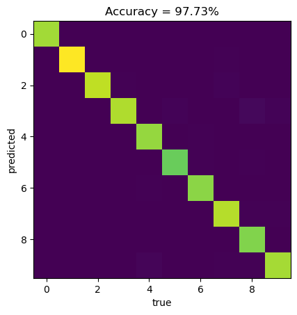

# import torch
# Train the model for a maximum of 100 epochs
#for epoch in range(100):
# Train the model for one epoch
# train(model, train_data, optimizer)
# Evaluate the model on the validation set
# val_loss = evaluate(model, val_data)
# If the validation loss has not improved in the last 10 epochs, stop training
# if val_loss > best_val_loss:
# best_val_loss = val_loss
# patience = 0
# else:
# patience += 1
# if patience == 10:
# breakNeural Networks regularization

1 Overfitting
Overfitting is a common problem in deep learning, and occurs when a model is excessively complex and is able to fit the training data too closely. This can lead to poor generalization to new, unseen data, as the model may have learned patterns in the training data that are not present in the real world.
There are several factors that can contribute to overfitting in deep neural networks:
Large number of parameters: complex network architectures, such as very deep networks or networks with a large number of parameters, can be prone to overfitting.
Lack of sufficient data: If the training dataset is small, the model may be able to fit the training data too closely, leading to overfitting.
It is therefore to use regularization techniques to prevent it.
2 Neural Networks regularization
Regularization techniques are used to prevent overfitting in deep learning models. Regularization techniques result in:
Improved generalization: By preventing overfitting, regularization can help to improve the generalization performance of the model on new, unseen data.
Simplified models: Regularization can help to reduce the complexity of the model, which can make it easier to interpret and understand.
Increased robustness: Regularized models are often more robust to noise and other types of perturbations, as they are less sensitive to specific patterns in the training data.
Improved efficiency: Regularization can help to reduce the number of parameters in the model, which can make the model more efficient to train and deploy.
Better interpretability: Regularization can help to identify the most important features in the data, which can improve the interpretability of the model.
Improved optimization: Regularization can help to stabilize the optimization process, which can lead to faster convergence and better performance.
Reduced risk of overfitting: Regularization helps to reduce the risk of overfitting, which can be a major issue when training deep learning models.
Better generalization to new data distributions: Regularization can help to improve the generalization of the model to new data distributions, as it encourages the model to learn more generalizable patterns in the data.
Improved performance on small datasets: Regularization can be particularly useful when working with small datasets, as it can help to reduce the risk of overfitting and improve the generalization performance of the model.
Improved performance on noisy datasets: Regularization can help to improve the performance of the model on noisy datasets, as it encourages the model to learn more robust and generalizable patterns in the data.
3 Regularization techniques
There are several regularization techniques that are commonly used to train deep neural networks:
3.1 Weight decay (L1/L2 regularization)
This method involves adding a penalty to the cost function during training to discourage the model from learning excessively large weights. These regularization techniques are based on the idea that large weights can lead to overfitting, as they may allow the model to fit the training data too closely. L1 and L2 regularization are methods for adding a penalty term to the cost function during training to discourage the model from learning excessively large weights. L1 regularization:
3.1.1 L1 regularization
L1 regularization, also known as ${} regularization, adds a penalty term to the cost function that is proportional to the absolute value of the weights. The L1 regularization term has the form:
\[\begin{equation} L_1 = \lambda \sum |W| \end{equation}\] where λ is the regularization parameter, and w is the weight.
The effect of L1 regularization is to push the weights towards zero, which can help to reduce overfitting by decreasing the complexity of the model. L1 regularization can also be useful for feature selection, as it tends to drive the weights of unimportant features to zero, effectively removing them from the model.
3.1.2 L2 regularization
L2 regularization, also known as \({\it Ridge}\) regularization, adds a penalty term to the cost function that is proportional to the square of the weights. The L2 regularization term has the form:
\[\begin{equation} L_2 = \lambda \sum W^2 \end{equation}\]
where \(\lambda\) is the regularization parameter, and \(W\) are weights of the model.
The effect of L2 regularization is to shrink the weights towards zero, which can help to reduce overfitting by decreasing the complexity of the model.
However, unlike L1 regularization, L2 regularization does not lead to the complete removal of weights, as it only shrinks the weights rather than setting them to zero.
In general, L2 regularization is more commonly used than L1 regularization, as it tends to be more stable and easier to optimize. However, L1 regularization can be useful in situations where it is important to select a subset of features, as it has the ability to drive some weights to zero.
3.2 Dropout
This is a regularization technique that randomly sets a fraction of the activations to zero during training. This helps to prevent overfitting by forcing the model to be more robust to the specific weights of individual units.
3.3 Batch normalization:
Batch normalization is a technique that is used to normalize the activations of a mini-batch in order to stabilize and accelerate the training of deep neural networks.
Ideally, the normalization would be conducted over the entire training set, but to use this step jointly with stochastic optimization methods, it is impractical to use the global information. Thus, normalization is restrained to each mini-batch in the training process. This can help to prevent overfitting by ensuring that the activations of a layer have a consistent distribution, which makes it easier for the model to learn.
During training, the batch normalization layer computes the mean and standard deviation of the activations of the current mini-batch and uses these statistics to normalize the activations. The normalized activations are then computed as follows:
normalized_activations = (activations - mean) / std
where mean and std are the mean and standard deviation of the activations, respectively.
The batch normalization layer also stores the mean and standard deviation of the activations in a set of running statistics, which are updated at each training iteration by exponentially moving the mean and standard deviation of the mini-batch towards the mean and standard deviation of the running statistics.
During evaluation of the model, the batch normalization layer uses the mean and standard deviation of the running statistics to normalize the activations. This helps to ensure that the model’s behavior is consistent during training and evaluation, and can improve the model’s generalization ability.
In PyTorch, batch normalization can be implemented by using the BatchNorm1d layer for fully-connected layers, or the BatchNorm2d layer for convolutional layers. These layers should be placed after the linear or convolutional layers, respectively, and before the non-linear activation function. For example:
3.4 Early stopping
This method involves stopping the training process before the model has fully converged. This can be used to prevent overfitting by limiting the number of iterations that the model can use to learn the training data.
Data augmentation: This method involves generating additional training examples by applying random transformations to the existing training examples. This can help to prevent overfitting by providing the model with more diverse data to learn from.
3.5 Data augumentation
Data augmentation: To implement data augmentation in PyTorch, you can use the torchvision.transforms module, which provides a number of pre-defined image transformations that can be applied to the training data. For example:
# import torchvision.transforms as transforms
# Define a transformation that randomly crops and flips the input images
#transform = transforms.Compose([
# transforms.RandomCrop(32, padding=4),
# transforms.RandomHorizontalFlip()
#])
# Apply the transformation to the training data
#train_data = torch.utils.data.DataLoader(
# dataset, batch_size=batch_size, shuffle=True, transform=transform)4 Example: MNIST dataset
# !pip install torch torchvision
import torch
import torch.nn as nn
import torch.optim as optim
import torch.nn.functional as F
import torch.utils.data as data
import torchvision
import torchvision.transforms as transforms
import numpy as np
import matplotlib.pyplot as pltWe’ll then define the transform for the data. We’ll use the ToTensor transform to convert the images to tensors, and we’ll also apply data augmentation by randomly flipping and rotating the images.
# Define a transform to normalize the data
transform = transforms.Compose([transforms.ToTensor(),
# transforms.RandomRotation(7),
# transforms.RandomHorizontalFlip(),
# transforms.RandomVerticalFlip(),
transforms.Normalize((0.5,), (0.5,))])Next, we’ll load the MNIST dataset using the transform we just defined. We’ll also define the batch size and set the shuffle parameter to True so that the data is shuffled at each epoch.
batch_size = 64
train_dataset = torchvision.datasets.MNIST(root='.', train=True, download=True, transform=transform)
train_loader = data.DataLoader(train_dataset, batch_size=batch_size, shuffle=True)
test_dataset = torchvision.datasets.MNIST(root='.', train=False, download=True, transform=transform)
test_loader = data.DataLoader(test_dataset, batch_size=batch_size, shuffle=False)Now, we’ll define the example of our neural network architecture (later we can add dropout with a probability of \(0.5\) after each hidden layer, and/or batch normalization after each hidden layer.)
# Define the model
Nx = 28
Ny = 28
N_h_1 = 128
N_h_2 = 64
class Net(nn.Module):
def __init__(self):
super(Net, self).__init__()
self.fc1 = nn.Linear(Nx*Ny, N_h_1)
self.bn1 = nn.BatchNorm1d(N_h_1)
self.fc2 = nn.Linear(N_h_1, N_h_2)
self.bn2 = nn.BatchNorm1d(N_h_2)
self.fc3 = nn.Linear(N_h_2, 10)
def forward(self, x):
x = x.view(-1, Nx*Ny)
x = F.relu(self.fc1(x))
# x = self.bn1(x)
# x = F.dropout(x, p=0.5)
x = F.relu(self.fc2(x))
# x = self.bn2(x)
# x = F.dropout(x, p=0.5)
x = self.fc3(x)
return x
model = Net()With torchinfo library we can inspect properties of our model:
# python -m pip install torchinfo
import torchinfo
torchinfo.summary(model, (1, 28, 28), batch_dim = 0,
col_names = ("input_size", "output_size", "num_params", "kernel_size", "mult_adds"),
verbose = 0)=====================================================================================================================================================================
Layer (type:depth-idx) Input Shape Output Shape Param # Kernel Shape Mult-Adds
=====================================================================================================================================================================
Net [1, 1, 28, 28] [1, 10] 384 -- --
├─Linear: 1-1 [1, 784] [1, 128] 100,480 -- 100,480
├─Linear: 1-2 [1, 128] [1, 64] 8,256 -- 8,256
├─Linear: 1-3 [1, 64] [1, 10] 650 -- 650
=====================================================================================================================================================================
Total params: 109,770
Trainable params: 109,770
Non-trainable params: 0
Total mult-adds (M): 0.11
=====================================================================================================================================================================
Input size (MB): 0.00
Forward/backward pass size (MB): 0.00
Params size (MB): 0.44
Estimated Total Size (MB): 0.44
=====================================================================================================================================================================Similar results can be obtained with model.state_dict():
# Print model's state_dict
print("Model's state_dict:")
for param_tensor in model.state_dict():
print(param_tensor, "\t", model.state_dict()[param_tensor].size())Model's state_dict:
fc1.weight torch.Size([128, 784])
fc1.bias torch.Size([128])
bn1.weight torch.Size([128])
bn1.bias torch.Size([128])
bn1.running_mean torch.Size([128])
bn1.running_var torch.Size([128])
bn1.num_batches_tracked torch.Size([])
fc2.weight torch.Size([64, 128])
fc2.bias torch.Size([64])
bn2.weight torch.Size([64])
bn2.bias torch.Size([64])
bn2.running_mean torch.Size([64])
bn2.running_var torch.Size([64])
bn2.num_batches_tracked torch.Size([])
fc3.weight torch.Size([10, 64])
fc3.bias torch.Size([10])Let’s define custom loss function: cross-entropy with L2 regularization term:
# Define the custom loss function
class CrossEntropyLossWithL1(nn.Module):
def __init__(self, weight_decay=0.01):
super(CrossEntropyLossWithL1, self).__init__()
self.cross_entropy_loss = nn.CrossEntropyLoss()
self.weight_decay = weight_decay
def forward(self, logits, labels):
# Compute the cross entropy loss
loss = self.cross_entropy_loss(logits, labels)
# Add the L1 regularization term
L1_loss = 0.0
for param in self.parameters():
L1_loss += torch.sum(param.abs())
# Add the L2 regularization term
L2_loss = 0.0
for param in self.parameters():
L2_loss += torch.sum(param.pow(2))
# loss += self.weight_decay * L1_loss
loss += self.weight_decay * L2_loss
return lossLet’s set custom loss function and the optimizer:
# criterion = nn.CrossEntropyLoss() # standard cross-entropy loss function
criterion = CrossEntropyLossWithL1() # our custom loss function with L1 regularization term
optimizer = optim.Adam(model.parameters(), lr=0.001)
Reseting gradients during training loop with optimizer.zero_grad()
In PyTorch, optimizers are used to update the model parameters based on the computed gradients. The optimizer.zero_grad() function clears the gradients of all the model parameters, so that they are ready to be updated with new gradients in the next iteration.
If you don’t clear the gradients before starting a new iteration, the gradients from the previous iteration will be accumulated and the model parameters will be updated based on the accumulated gradients, which can lead to incorrect results.
For example, consider the case where the gradients from the previous iteration are all positive. If the gradients from the current iteration are also all positive, then the accumulated gradients will be even larger, which can lead to large updates to the model parameters that may be too large and result in overfitting.
On the other hand, if the gradients from the previous iteration are all negative and the gradients from the current iteration are all positive, then the accumulated gradients will cancel each other out and the model parameters will not be updated at all, which can result in underfitting.
By clearing the gradients before starting a new iteration, you ensure that the model parameters are updated based only on the gradients from the current iteration, which helps to prevent overfitting and underfitting.
It is generally a good practice to call optimizer.zero_grad() before starting each iteration of the training loop.
The training loop:
# Set the number of epochs
n_epochs = 30
# Lists to store the running loss and accuracy
loss_list = []
acc_list = []
# Set the model to training mode
model.train()
# Loop over the number of epochs
for epoch in range(n_epochs):
running_loss = 0.0
running_correct = 0
# Loop over the training data
for i, (inputs, labels) in enumerate(train_loader):
# Zero the parameter gradients
optimizer.zero_grad()
# Forward pass
outputs = model(inputs)
loss = criterion(outputs, labels)
# Backward pass and optimize
loss.backward()
optimizer.step()
# Update the running loss and correct predictions
running_loss += loss.item()
_, predicted = torch.max(outputs.data, 1)
running_correct += (predicted == labels).sum().item()
# Calculate the epoch loss and accuracy
epoch_loss = running_loss / len(train_loader)
epoch_acc = running_correct / len(train_loader.dataset)
# Print the epoch loss and accuracy
print('Epoch: {} Loss: {:.4f} Accuracy: {:.4f}'.format(epoch+1, epoch_loss, epoch_acc))
# Append the epoch loss and accuracy to the lists
loss_list.append(epoch_loss)
acc_list.append(epoch_acc)Epoch: 1 Loss: 0.3990 Accuracy: 0.8820
Epoch: 2 Loss: 0.1906 Accuracy: 0.9425
Epoch: 3 Loss: 0.1375 Accuracy: 0.9587
Epoch: 4 Loss: 0.1093 Accuracy: 0.9667
Epoch: 5 Loss: 0.0939 Accuracy: 0.9712
Epoch: 6 Loss: 0.0811 Accuracy: 0.9742
Epoch: 7 Loss: 0.0698 Accuracy: 0.9779
Epoch: 8 Loss: 0.0660 Accuracy: 0.9791
Epoch: 9 Loss: 0.0608 Accuracy: 0.9804
Epoch: 10 Loss: 0.0527 Accuracy: 0.9822
Epoch: 11 Loss: 0.0463 Accuracy: 0.9855
Epoch: 12 Loss: 0.0465 Accuracy: 0.9841
Epoch: 13 Loss: 0.0428 Accuracy: 0.9856
Epoch: 14 Loss: 0.0370 Accuracy: 0.9876
Epoch: 15 Loss: 0.0369 Accuracy: 0.9876
Epoch: 16 Loss: 0.0351 Accuracy: 0.9879
Epoch: 17 Loss: 0.0322 Accuracy: 0.9889
Epoch: 18 Loss: 0.0272 Accuracy: 0.9906
Epoch: 19 Loss: 0.0300 Accuracy: 0.9895
Epoch: 20 Loss: 0.0272 Accuracy: 0.9903
Epoch: 21 Loss: 0.0303 Accuracy: 0.9899
Epoch: 22 Loss: 0.0244 Accuracy: 0.9917
Epoch: 23 Loss: 0.0226 Accuracy: 0.9924
Epoch: 24 Loss: 0.0224 Accuracy: 0.9927
Epoch: 25 Loss: 0.0243 Accuracy: 0.9918
Epoch: 26 Loss: 0.0216 Accuracy: 0.9925
Epoch: 27 Loss: 0.0210 Accuracy: 0.9927
Epoch: 28 Loss: 0.0213 Accuracy: 0.9929
Epoch: 29 Loss: 0.0231 Accuracy: 0.9922
Epoch: 30 Loss: 0.0179 Accuracy: 0.9939To evaluate the model on the test dataset:
Model evaluation: model.eval() and torch.no_grad()
In PyTorch, the model.eval() function sets the model to evaluation mode. In evaluation mode, the model’s batch normalization and dropout layers behave differently than they do in training mode.
For example, in training mode, the batch normalization layer uses the mean and standard deviation of the layer’s input to normalize the activations, whereas in evaluation mode it uses the mean and standard deviation of the running statistics stored during training to normalize the model’s parameters. This helps to ensure that the model’s behavior is consistent during training and evaluation.
In addition, dropout layers behave differently in training mode and evaluation mode. In training mode, dropout layers randomly drop out a certain fraction of the activations to prevent overfitting. In evaluation mode, dropout layers do not drop out any activations and simply pass the activations through unchanged.
The torch.no_grad() function is used to turn off gradient calculation. In general, gradient calculation is needed only during training, when you want to update the model parameters based on the computed gradients. During evaluation, you don’t need to compute the gradients and turning off gradient calculation can save some computation time.
By using model.eval() and torch.no_grad() together, you can ensure that the model is in evaluation mode and that gradient calculation is turned off during evaluation.
It is generally a good practice to set the model to evaluation mode before evaluating the model’s performance, and to set the model back to training mode before continuing with the training.
# Set the model to evaluation mode
model.eval()
# Initialize the test loss and correct predictions
test_loss = 0.0
test_correct = 0
# Turn off gradient calculation
confusion_matrix = np.zeros((10,10))
with torch.no_grad():
# Loop over the test data
for inputs, labels in test_loader:
# Forward pass
outputs = model(inputs)
loss = criterion(outputs, labels)
# Update the test loss and correct predictions
test_loss += loss.item()
_, predicted = torch.max(outputs.data, 1)
test_correct += (predicted == labels).sum().item()
for label_index, label in enumerate(labels):
confusion_matrix[predicted[label_index].item(),label.item()] += 1
# Calculate the test loss and accuracy
test_loss = test_loss / len(test_loader)
test_acc = test_correct / len(test_loader.dataset)
# Print the test loss and accuracy
print('Test Loss: {:.4f} Test Accuracy: {:.4f}'.format(test_loss, test_acc))Test Loss: 0.1029 Test Accuracy: 0.9773correct = np.sum(np.diagonal(confusion_matrix))
accuracy = correct/np.sum(confusion_matrix)
confusion_matrix = confusion_matrix/np.sum(confusion_matrix)*100
plt.imshow(confusion_matrix)
plt.xlabel("true")
plt.ylabel("predicted")
plt.title("Accuracy = " + "{:2.2f}".format(accuracy*100) + "%")Text(0.5, 1.0, 'Accuracy = 97.73%')
Finally, we can have a look at trained weights and biasases via
# for name, param in model.named_parameters():
# if param.requires_grad:
# print(name, param.data)Finally, we can save our trained model to file with:
PATH = "model_save"
torch.save(model, PATH);We can also load model from file:
model = torch.load(PATH);
model.eval();
Exercise
- Calculate confusion matrix for training data.
- Plot accuracy/loss on training data vs epochs (the same for test data).
- Add dropout layers - check accuracy on test data.
- Add batch-norm layers - check accuracy on test data.
- Train on augumented data (rotations/flips).